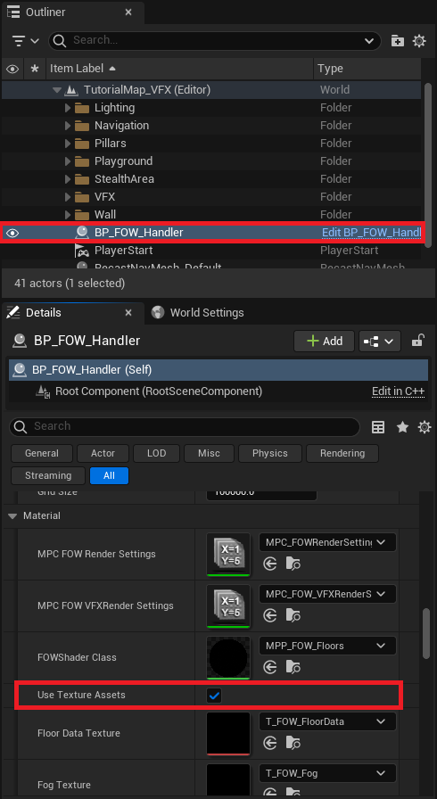
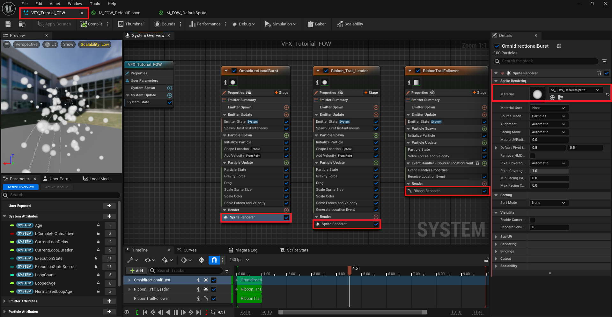
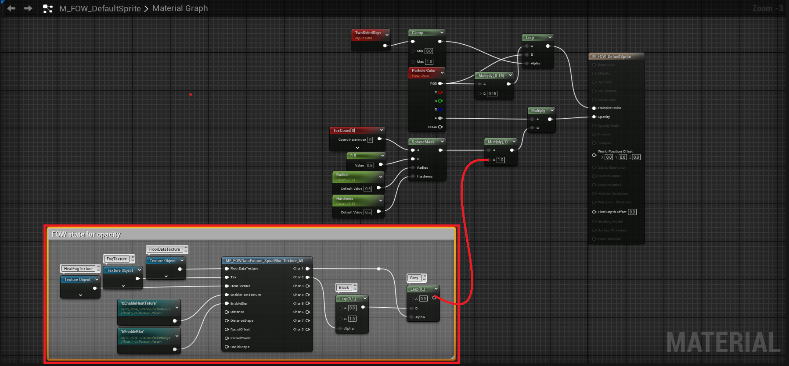
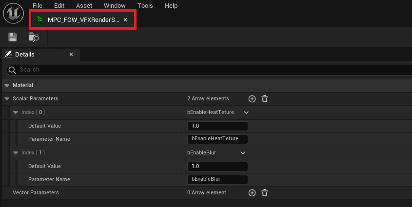

Material Opacity
This tutorial has been created in the Tutorial/Maps/TutorialMap_VFX map provided in the Demo Project.
It covers how to change the materials opacity depending on the fog.
/!\ This setup will work only in
Standaloneor for theServerin theEditor. Once the game is packed, the client will correctly apply theOpacity Mask.
VFX Materials
If you don't have the
Demo Projectyou can find the material nodes in the plugin content folderMaterial/SurfaceMaterial/M_FOW_OpacityMask.uasset
The fog post-process and visibility component might not be enough to simulate the unit's vision accurately within your game. You might want a pixel-perfect
Opacity Mask based on the fog state for VFX or other materials. By using Texture Assets, it's possible to share the FOW globally across all materials
without creating dynamic instances. This setup makes implementing the opacity mask straightforward.
The tutorial demonstrates spawning particles that are hidden by the fog when they are out of sight. The firework VFX, however, does not include the opacity mask modification.

In the FOWHandler, go to Settings and look for UseTextureAssets. Enable it, and three texture variables should appear, each pre-set with values. These
Texture Assets are shared across the materials. You'll notice they are 4k textures with specific settings, like grayscale. They are this large because
texture assets cannot be resized in C++, and a worst-case scenario must be used to ensure the FOW performs well in most games.

You can now examine the premade FVX_Tutorial_FOW provided and verify that the SpriteRenderer is correctly set with an M_FOW_Default... material. There's
no need for additional setup; only a custom material needs to be specified (the provided materials are copies of the one in the engine).

Next, open the Tutorial/VFX/Material folder and access M_FOW_DefaultRibbon and M_FOW_DefaultSprite. While the materials are slightly different, they follow
the same FOW logic to alter the opacity mask.

The material code is already present and just needs to be connected to the multiply node. Understanding it fully isn't necessary; the node setup grants access to
the FOW channel output, with the first channel representing Sight and the second representing what has been Seen, ranging from 0 to 1. With these values, it's
easy to create a mask or other effects as desired. You can simply copy and paste the nodes inside the comment for your custom material :)

After reconnecting the nodes, test the tutorial to confirm that VFX inside the bush remains hidden.
VFX Materials settings
By default, the provided nodes for the Opacity Mask are configured to soften the fog data using a Blur algorithm and to apply the HeatTexture if it's enabled
in the FOWHandler. These two settings may increase rendering costs. To adjust this, disable them in the MPC_FOWRenderSettings by changing the values of
VFX_bEnableHeatTexture and VFX_bEnableBlur.

You can also modify these values at runtime with console commands:
fow.r.vfx.EnableHeatTexturelets you toggle the Heat Texture on or off.fow.r.vfx.EnableBlurlets you toggle the Blur on or off.
Documentation built with Unreal-Doc v1.0.9 tool by PsichiX